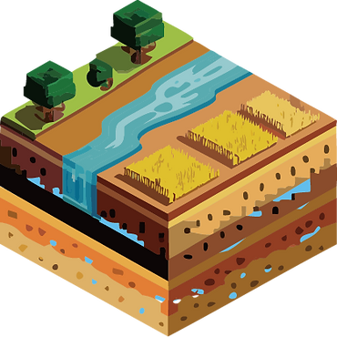

Drought Monitoring
Specific type of drought
Integrated type


Specific type of drought
Integrated type
Short-term (~days)
Sub-seasonal to Seasonal

Data harmonization
Radiation transfer model parameterization
Last updated : 2026/09/07
Lee, G., Lee, J., Im, J., Son, B., & Park, S. (2026). ASTRA: AMSR2-to-SMAP image-to-image translation for soil moisture conversion and radiative transfer model-based interpretation. International Journal of Applied Earth Observation and Geoinformation, 149, 105297.
Lee, J., Park, H., Im, J., Koyama, C., Tobias, R. R., & Tadono, T. (2026). ESCAPE: An ensemble-based self-calibrated autoencoder with physics-informed estimation of high-resolution soil moisture and surface roughness from ALOS-2/PALSAR-2 polarimetric observations. International Journal of Applied Earth Observation and Geoinformation, 147, 105206.
Lee, J., Jung, S., & Im, J. (2024). ASCAT2SMAP: image-to-image translation to obtain L-band-like soil moisture from C-band satellite data. IEEE Journal of Selected Topics in Applied Earth Observations and Remote Sensing.
Lee, J., Im, J., Son, B., Cosio, E. G., & Salinas, N. (2024). Improved SMAP soil moisture retrieval using a deep neural network-based replacement of radiative transfer and roughness model. IEEE Transactions on Geoscience and Remote Sensing.
Lee, J., Park, S., Im, J., Yoo, C., & Seo, E. (2022). Improved soil moisture estimation: Synergistic use of satellite observations and land surface models over CONUS based on machine learning. Journal of Hydrology, 127749.
Son, B., Im, J., Park, S., & Lee, J. (2022). Satellite-based Drought Forecasting: Research Trends, Challenges, and Future Directions. Korean Journal of Remote Sensing, 37(4), 815-831.
Son, B., Park, S., Im, J., Park, S., Ke, Y., & Quackenbush, L. J. (2021). A new drought monitoring approach: Vector Projection Analysis (VPA). Remote Sensing of Environment, 252, 112145.
Park, S., Im, J., Han, D., & Rhee, J. (2020). Short-Term Forecasting of Satellite-Based Drought Indices Using Their Temporal Patterns and Numerical Model Output. Remote Sensing, 12(21), 3499.
Park, S., Kang, D., Yoo, C., Im, J., & Lee, M. I. (2020). Recent ENSO influence on East African drought during rainy seasons through the synergistic use of satellite and reanalysis data. ISPRS Journal of Photogrammetry and Remote Sensing, 162, 17-26.
Park, S., Son, B., Im, J., Lee, J., Lee, B., & Kwon, C. (2019). Development of Satellite-Based Drought Indices for Assessing Wildfire Risk. Korean Journal of Remote Sensing, 35(6), 1285-1298.
Rhee, J., & Im, J. (2017). Meteorological drought forecasting for ungauged areas based on machine learning: Using long-range climate forecast and remote sensing data. Agricultural and Forest Meteorology, 237, 105-122.
Park, S., Im, J., Park, S., & Rhee, J. (2017). Drought monitoring using high resolution soil moisture through multi-sensor satellite data fusion over the Korean peninsula. Agricultural and Forest Meteorology, 237, 257-269.
Park, S., Park, S., Im, J., Rhee, J., Shin, J., & Park, J. D. (2017). Downscaling GLDAS Soil Moisture Data in East Asia through Fusion of Multi-Sensors by Optimizing Modified Regression Trees. Water, 9(5), 332.
Im, J., Park, S., Rhee, J., Baik, J., & Choi, M. (2016). Downscaling of AMSR-E soil moisture with MODIS products using machine learning approaches. Environmental Earth Sciences, 75(15), 1120.
Park, S., Im, J., Jang, E., & Rhee, J. (2016). Drought assessment and monitoring through blending of multi-sensor indices using machine learning approaches for different climate regions. Agricultural and forest meteorology, 216, 157-169.
{kind=link}
{kind=link}
{kind=link}